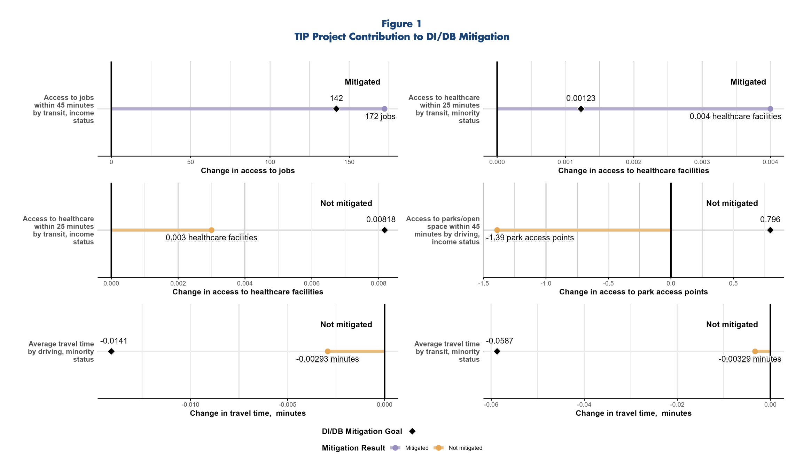
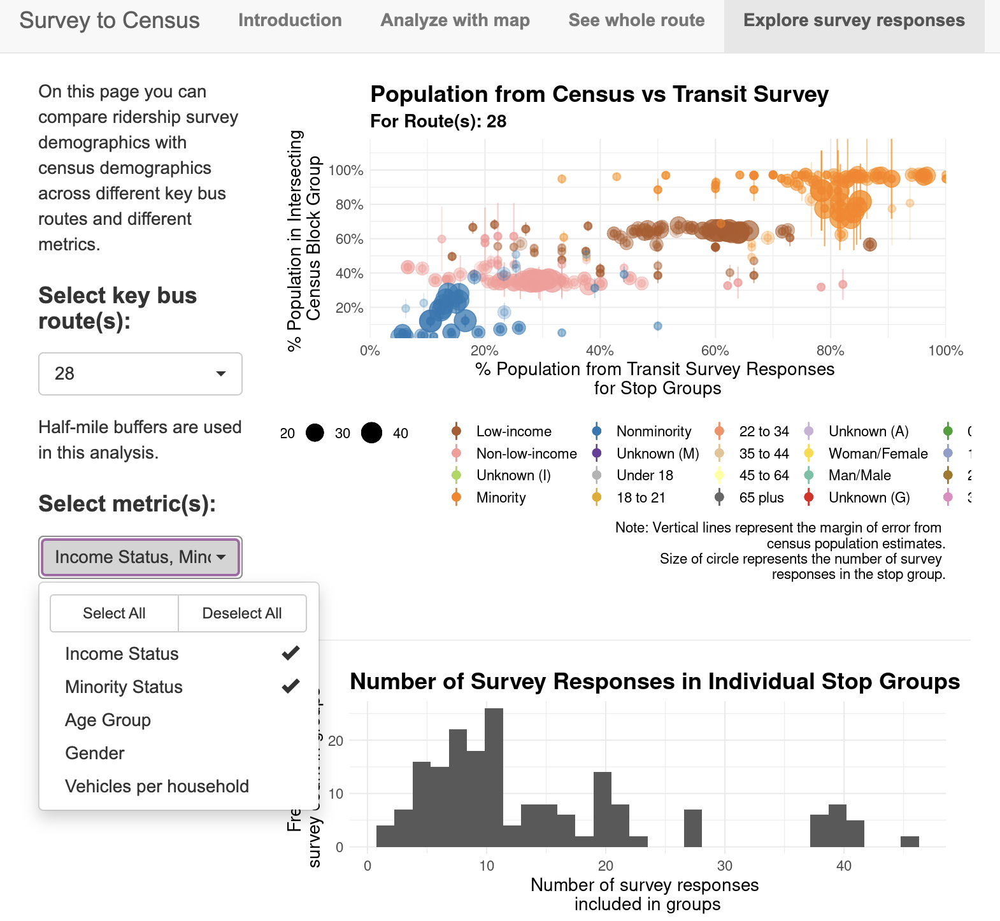
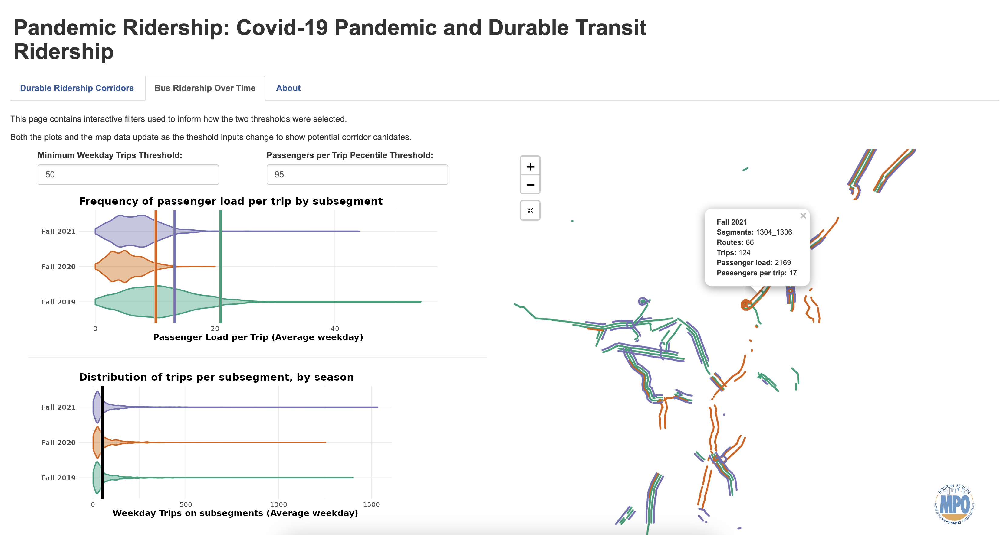

January 2024 & March 2022 & February 2021
Projected equity implications for fare changes using survey, ridership, and revenue data for the MBTA. Managed transfer from a spreadsheet-based process to version-controlled, coded process to accommodate more complex fare changes and rolling data input updates.
Role: Project Manager, Data Analyst
R (tidyverse), Postgres, GitHub
March 2024
Compiled and consolidated efforts to maintain demographic data on equity populations that the Boston Region MPO tracks throughout work.
Role: Project Manager, Data Analyst
R (tidycensus, tidyverse), GitHub
Fall 2023, Fall 2024
Facilitated the data collection, preparation, and archiving of the transportation network and demographic data for the Boston Region MPO’s Conveyal work. Supported staff in their use of the of Conveyal and dasymetric demographic data throughout project applications across the agency.
Role: Data Analyst
OpenStreetMap, Osmosis, R (tidyverse, osmextract), Python (goepandas, tobler)
March 2024
Quantified the impact of Transportation Improvement Program projects to destination access throughout the Boston Region to report on whether they help mitigate potential inequities found in the Long Range Transportation Plan.
Role: Data Analyst
Conveyal, R (tidyverse, sf, stars), python
2020–2024
Researched and designed models to estimate rail replacement shuttle passenger counts for the MBTA to support National Transit Database reporting. Designed and implemented strategy to predict ridership and shuttle ridership patterns based on remotely sensed and field counts.
Role: Data Analyst
R (tidyverse, sf, gtfs2gps, gtfstools, bigrquery), BigQuery, MBTA Research Server (postgres), MBTA service alerts API/LAMP
November 2023
Developed analysis to report on productivity, efficiency, and equity implications of potential fare engagement inspection strategies for the MBTA. Designed a model to measure potential interaction between passengers and fare inspection teams.
Role: Project Manager, Lead Data Analyst
R (tidyverse), Postgres, BigQuery
August 2022
Designed destination access equity metrics and developed interactive web apps to assist in regional transportation planning using dasymetric population mapping.
Role: Data Analyst, Application Development
R (tidyverse, sf, stars, leaflet, shiny), python (tobler, geopandas, numpy, osmnx), Conveyal
January 2021
Investigated the relationship between he demographic characteristics of transit riders and the characteristics of all residents in the walking distances to nearby bus stops. Reported on limits of modeling relationship based on survey inputs in a technical memo.
Role: Data Analyst, Application Development
R (tidyverse, tidycensus, shiny)
October 2022
Investigated durable bus ridership corridors since the pandemic. Developed bus route segmentation and corridor identification processes.
Role: Data Analyst
R (tidyverse, gtfs2gps, gtfstools, shiny)
Mapping Durable Transit Ridership in the Boston Region
North American Cartographic Information Society, Annual Meeting. Minniapolis, MN. October 2022.
Map Use in Transit Control Centers: Mapping geographic information flows
International Cartography Conference. Tokyo, Japan. July 2019.
Monitoring Urban Transit Networks: Map use in transit control centers
North American Cartographic Information Society, Annual Meeting. Norfolk, VA. October 2018.
Click HERE for a printable CV.
I am a collaborative and process-oriented data scientist interested in developing and designing workflows to support effective use of data and geographic information. I have a background in spatial data science, information visualization, cartography, usability studies, and transportation data analysis.